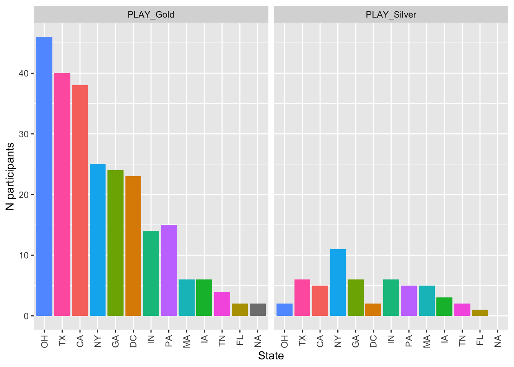

State of PLAY
suppressPackageStartupMessages(library(tidyverse))
suppressPackageStartupMessages(library(lubridate))
suppressPackageStartupMessages(library(forcats))The following summarizes the current state of the project as of 2023-09-26.
Recent data
targets::tar_load(screen_df, store="../_targets")
targets::tar_load(home_visit_df, store="../_targets")
screen_df <- readr::read_csv(file.path(here::here(), "data/csv/screening/agg/PLAY-screening-latest.csv"))## Rows: 550 Columns: 51
## ── Column specification ──────────────────────────────────────────────
## Delimiter: ","
## chr (42): site_id, subject_number, play_id, child_sex, child_born...
## dbl (8): child_age_mos, child_birthage, child_weight_pounds, chi...
## dttm (1): submit_date
##
## ℹ Use `spec()` to retrieve the full column specification for this data.
## ℹ Specify the column types or set `show_col_types = FALSE` to quiet this message.Last month

Last 3 mos
Overall
From Databrary
Because of some minor anomalies merging the older KBT surveys, we query the Databrary API for the most complete data about PLAY sessions.
For debugging purposes, we set vb = TRUE so we get complete information about what’s working and what is not.
databraryr::login_db(Sys.getenv("DATABRARY_LOGIN"))## [1] TRUE
databrary_df <- purrr::map_df(play_vols$play_site_id, make_site_session_summary, vb = TRUE)
databrary_df %>%
dplyr::select(., site_name, site_id, site_vol_id, PLAY_Gold, PLAY_Silver, No_Visit, `NA`) %>%
dplyr::arrange(., desc(PLAY_Gold)) %>%
knitr::kable(., format = 'html') | site_name | site_id | site_vol_id | PLAY_Gold | PLAY_Silver | No_Visit | NA |
|---|---|---|---|---|---|---|
| Ohio State University | PLAYProject_OHIOS | 1103 | 47 | 4 | 10 | 5 |
| New York University | PLAYProject_NYUNI | 899 | 42 | 12 | 21 | 2 |
| University of Georgia | PLAYProject_UGEOR | 1515 | 31 | 3 | NA | NA |
| Georgetown University | PLAYProject_GEORG | 954 | 30 | 4 | 10 | 5 |
| UC Santa Cruz | PLAYProject_UCSCR | 1066 | 26 | 1 | 8 | NA |
| University of Texas at Austin | PLAYProject_UTAUS | 1517 | 26 | 4 | NA | 11 |
| University of Houston | PLAYProject_UHOUS | 1397 | 22 | 4 | NA | 1 |
| Children’s Hospital of Philadelphia | PLAYProject_CHOPH | 1370 | 19 | 2 | NA | 1 |
| Purdue University | PLAYProject_PURDU | 1363 | 12 | 5 | 3 | 2 |
| Vanderbilt University | PLAYProject_VBLTU | 1391 | 10 | 2 | 2 | 1 |
| Cal State Long Beach | PLAYProject_CSULB | 1376 | 9 | 1 | 3 | 3 |
| University of Iowa | PLAYProject_UIOWA | 1422 | 8 | 4 | NA | NA |
| Boston University | PLAYProject_BOSTU | 1008 | 8 | 6 | NA | 2 |
| UC Riverside | PLAYProject_UCRIV | 966 | 6 | 1 | NA | 2 |
| Cal State Fullerton | PLAYProject_CSUFL | 1481 | 6 | 5 | NA | 1 |
| University of Miami | PLAYProject_UMIAM | 996 | 6 | 2 | NA | 9 |
| Indiana University | PLAYProject_INDNA | 1400 | 4 | 2 | NA | NA |
| Michigan State University | PLAYProject_MICHS | 1590 | 2 | 2 | NA | 1 |
| Stanford University | PLAYProject_STANF | 1362 | 1 | 1 | 1 | NA |
| Virginia Commonwealth University | PLAYProject_VCOMU | 982 | 1 | 1 | 2 | NA |
| Cornell University | PLAYProject_CORNL | 1576 | NA | 2 | NA | 2 |
From KBT
targets::tar_load(home_visit_w_databrary_df, store="../_targets")
gold_silver <- home_visit_w_databrary_df %>%
dplyr::filter(!is.na(group_name))
xtabs(~ group_name + age_group, gold_silver)## age_group
## group_name 12mo 18mo 24mo
## PLAY_Gold 109 103 84
## PLAY_Silver 12 30 24
xtabs(~ group_name + child_sex, gold_silver)## child_sex
## group_name female male
## PLAY_Gold 143 153
## PLAY_Silver 29 37
df_race_eth <- gold_silver %>%
dplyr::filter(!is.na(group_name)) %>%
dplyr::mutate(., participant_race = recode(participant_race,
`Black or African American` = "Black_or_African_American",
`More than one` = "More_than_one"),
participant_ethnicity = recode(participant_ethnicity,
`Hispanic or Latino` = "Hispanic_or_Latino",
`Not Hispanic or Latino` = "Not_Hispanic_or_Latino"))
xtabs(~ participant_race + participant_ethnicity, df_race_eth)## participant_ethnicity
## participant_race Hispanic_or_Latino
## Asian 0
## Black_or_African_American 1
## More_than_one 19
## Native American or Alaskan Native 1
## Other 22
## Refused 1
## White 52
## participant_ethnicity
## participant_race Not_Hispanic_or_Latino
## Asian 3
## Black_or_African_American 6
## More_than_one 28
## Native American or Alaskan Native 0
## Other 6
## Refused 0
## White 223By site, location, & QA status
xtabs(~ site_id + group_name, gold_silver)## group_name
## site_id PLAY_Gold PLAY_Silver
## BOSTU 8 6
## CHOPH 19 5
## CORNL 0 2
## CSUFL 6 4
## CSULB 9 1
## GEORG 23 2
## INDNA 4 2
## MICHS 2 2
## NYUNI 30 10
## OHIOS 47 3
## PURDU 12 5
## STANF 1 1
## UCRIV 8 1
## UCSCR 25 1
## UGEOR 31 6
## UHOUS 22 3
## UIOWA 8 4
## UMIAM 6 2
## UTAUS 25 4
## VBLTU 10 2
gold_silver %>%
ggplot(.) +
aes(forcats::fct_infreq(context_state), fill = context_state) +
geom_bar() +
facet_grid(. ~ group_name) +
theme(axis.text.x = element_text(
angle = 90,
vjust = 0.5,
hjust = 1
)) + # Rotate text
labs(x = "State", y = "N participants") +
theme(legend.position = "none")

Figure 18: QA level by State